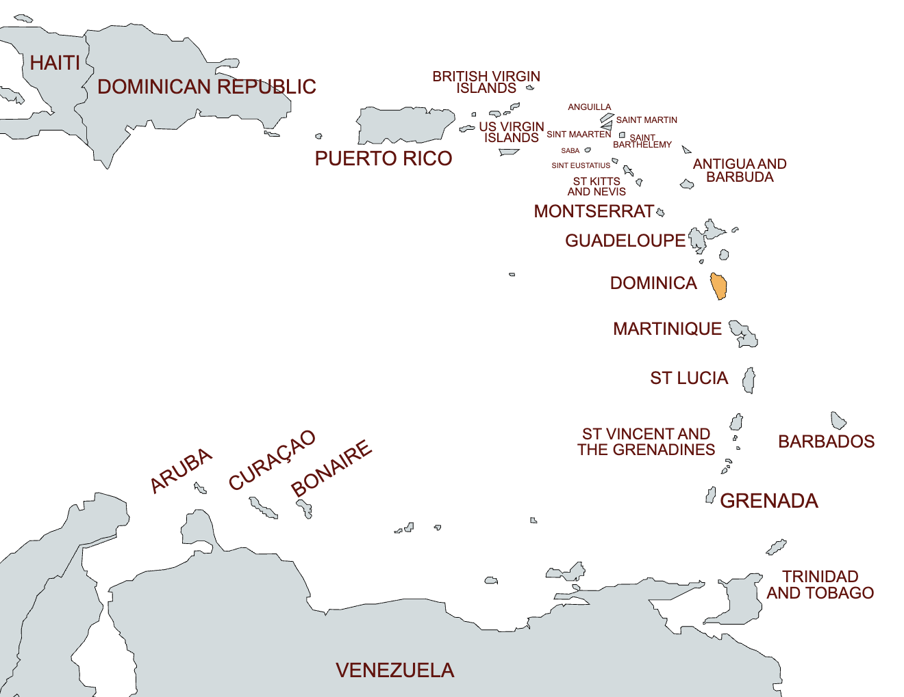
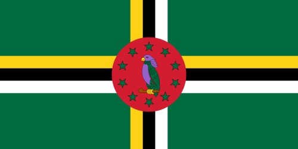
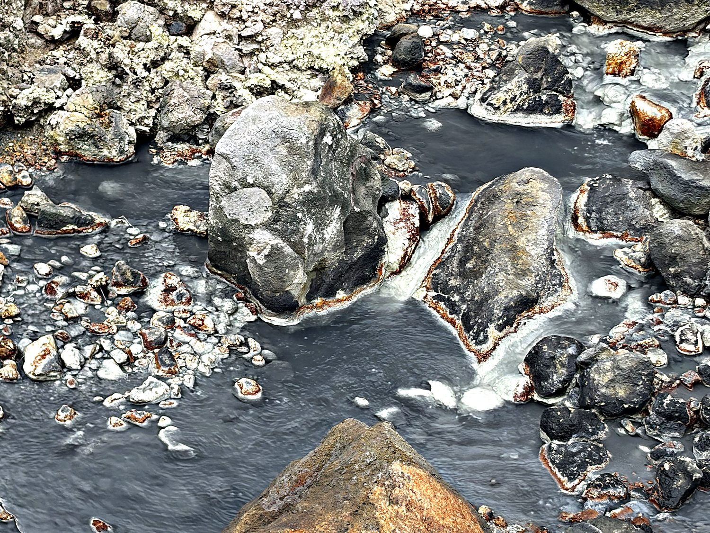
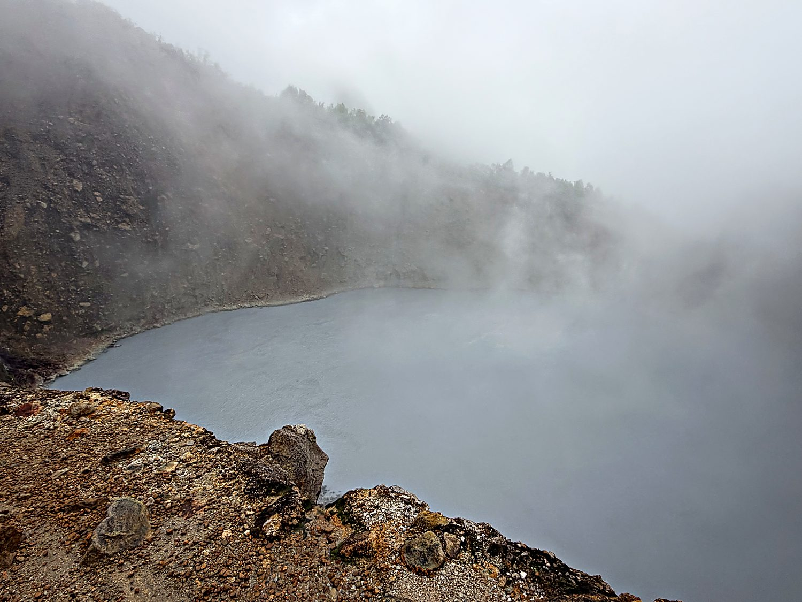
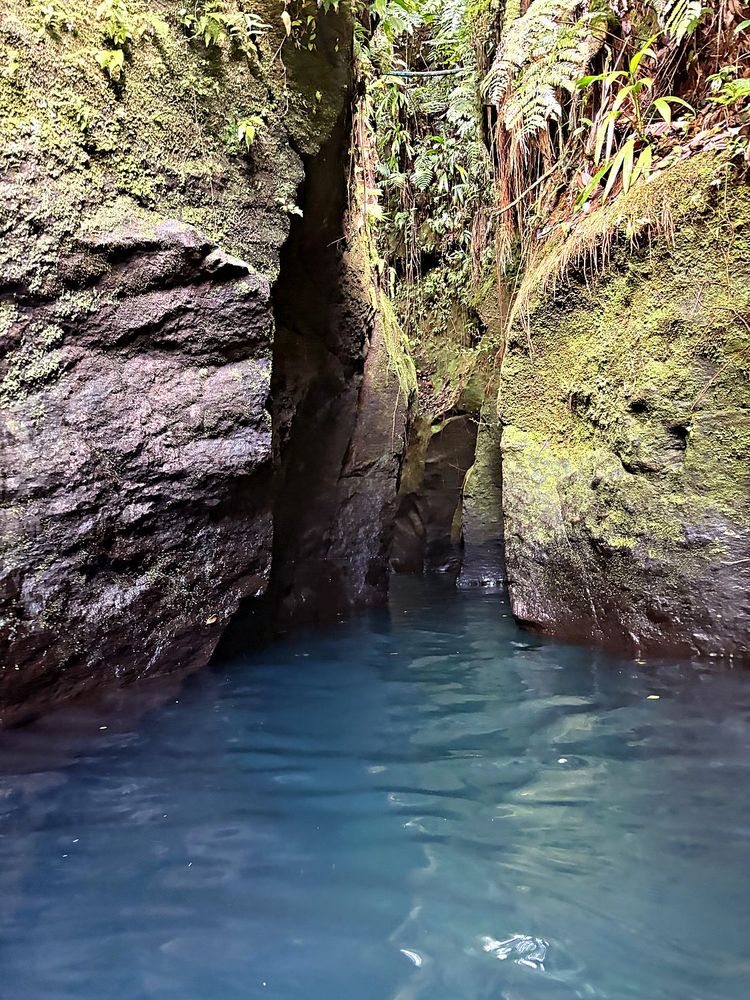

I visited Dominica in July 2026 on the way back from St Lucia. Dominica handed me, without exaggeration, the single best day of the entire trip. My main goal was to visit the Boiling Lake, which involves a long trek through the rainforest and then through volcanic terrain. I woke up at 6am to catch a two-dollar minibus to the trailhead. There I waited in gorgeous solitude, with only some small crabs for company, before being folded into a group of four unfailingly kind French tourists and their botanist guide Elvis. We got caught in a few short-lasted downpours, but between the heat and the wind, we dried off very quickly. I loved seeing countless exotic plants I had never seen before, and discovering stick insects that were indistinguishable from a possessed twig. Our guide also showed us how to swing Tarzan-style on a vine. The day ended with me tubing through a turquoise gorge and hitchhiking to a waterfall at sundown.
The capital, Roseau, is a small, weathered French-colonial town wedged between the Caribbean Sea and steep green mountains. In that respect it is entirely representative of Dominica, an island that is essentially one enormous rainforest with a coastline. Dominica bills itself as the "Nature Island," and for once the tourist board undersells. This is a place of nine potentially active volcanoes, more rivers than there are days in the year, and hot springs that bubble up wherever you dig. Columbus sighted it on a Sunday in November 1493 and, with the imaginative flair of a man naming his 400th island, called it Dominica, making it easily confused with the Dominican Republic several hundred miles away.

Dominica's rugged interior gave it a history unlike its flatter, plantation-covered neighbours. The mountains made large-scale sugar cultivation difficult. They also gave shelter to the Kalinago, the Indigenous people Europeans called the Caribs, who resisted colonization here longer and more successfully than almost anywhere else in the region. To this day Dominica is home to the Kalinago Territory in the northeast. It is the last surviving community of pre-Columbian Indigenous people in the eastern Caribbean. France colonized the island first and Britain seized it later, and the two traded it back and forth until the British prevailed. The result is a population that still speaks a French-based Creole under a formerly British state.

Dominica became fully independent on 3 November 1978. Its national flag is the only one on earth to feature a parrot: the Sisserou, or imperial amazon, a stately purple-and-green bird found nowhere else in the world. The green field represents the lush vegetation, the cross of yellow, black, and white the island's people and faith, and the ring of ten stars its parishes. Modern Dominica is defined as much by resilience as by beauty. In 2017 Hurricane Maria flattened the island almost overnight. It has since staked its future on becoming the world's first fully climate-resilient nation, a fittingly ambitious goal for a place this defiantly wild. The geothermal plant I passed on the way to the Boiling Lake hike suggested it is making progress towards this goal.
Two-thirds of the way to the Boiling Lake, the rainforest abruptly surrenders to the Valley of Desolation. It is a geothermal moonscape where the ground steams, hisses, and glows in improbable mineral colours of ochre, grey, and rust. This is the sort of landscape that makes you acutely aware you are walking across the roof of a live volcano. Our guide Elvis, entirely unbothered, boiled a batch of eggs in a natural steam vent. He then had us smear our faces with the sulphurous mud, which is supposedly excellent for the skin. I have no dermatological data to report, but I did briefly resemble a swamp creature, which felt appropriate.

The prize at the end of the hike is the Boiling Lake, the second-largest actively boiling lake in the world after New Zealand's Frying Pan Lake. It is not, technically, a hot spring but a flooded fumarole, a crack venting volcanic gas straight into a pool of grey-blue water. Its centre churns and bubbles like an enormous cauldron, alternately vanishing behind clouds of steam and dramatically revealing itself. Overhead I could see the cables of a controversial cable car under construction, due to open within months. That meant our sweat-soaked group was among the last to reach the lake the hard way, before the rails and viewing platforms and crowds of clamoring tourists arrive. Lucky us!

After the descent, I swam and tubed through Titou Gorge, a narrow slot canyon of luminous turquoise water. Sheer rock walls hem it in, and it is fed by both a hot spring and a waterfall at its far end. Film buffs may recognize it: this is where Pirates of the Caribbean: Dead Man's Chest staged Jack Sparrow and his crew's escape from the cannibals. After a long day of hiking, floating through that cool passage felt relaxing and rejuvenating. By the time I was ready to return to Roseau, the minibuses had stopped running, but one of the locals suggested I try hitchhiking, which is apparently very common in Dominica. I was successful with the first person I flagged down, and Indian immigrant called Akash, who was working on the cable car. He generously drove me all the way to Trafalgar Falls, going out of his way. For someone who lives in New York City, such kindness and lack of being on a tight schedule was novel, refreshing, and inspiring.
